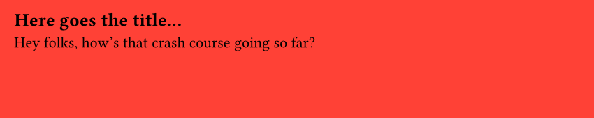
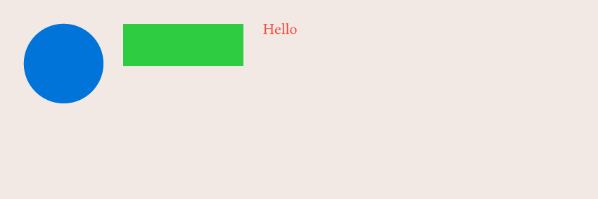

Crash course
Note
The official Typst documentation website has its own tutorial, that goes in much more depth that the crash course you're actually reading. Here, we'll focus on giving you the big picture rather than technical details.
Typst = text + a compiler¶
What we call "Typst" is usually one of the following:
- the Typst company the legal organization and people developing Typst
- the Typst typesetting system the language in itself
- the Typst compiler the (CLI) program that actually creates the PDF
The compiler will take a .typ file and create a PDF file with it. For example, a Typst file might look like this:
#set page(fill: red, width: 10cm, height: 3cm)
== Here goes the title...
Hey folks, how that crash course going so far?
Then we run typst compile file.typ, and we get:

Typst, in practice¶
The compiler is a CLI (Command Line Interface), which means it needs to run from the terminal.
But when you're trying to use Typst in more complex environments, like a web server or data pipeline, you're often interested in generating a PDF from a programming language, not from the terminal.
Basic syntax¶
If you ever used markdown before, getting started with Typst will be easy. For example, the following Typst file:
#set page(fill: rgb("#f2e9e4"), width: 12cm, height: 5cm)
= My first Typst document
== Smaller heading
=== But still an heading
This is a paragraph, where text can be *bold*, _italic_ or `code-like`

functions¶
Typst offers tons of functions that we can use to customize the output of our PDF. The syntax is very simple, and often, very intuitive.
For example, I want to put a blue circle, next to a green rectangle, next to a red text. How can I do that?
#set page(fill: rgb("#f2e9e4"), width: 12cm, height: 5cm)
#stack(
dir: ltr, // direction --> left to right
spacing: 0.5cm, // space between elements
circle(fill: blue, width: 2cm),
rect(fill: green, width: 3cm),
text(fill: red, "Hello")
)

What if I want them to be vertically aligned? I just call the align() function:
#set page(fill: rgb("#f2e9e4"), width: 12cm, height: 5cm)
#align(horizon, stack(
dir: ltr,
spacing: 0.5cm,
circle(fill: blue, width: 2cm),
rect(fill: green, width: 3cm),
text(fill: red, "Hello"),
))

set rules¶
A set rule is a way to tell to Typst how a given function should behave